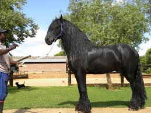

Friesians, a breed of horse, is a draft horse. Draft horses are thick boned, strong, and tall. Friesians have a swanlike neck and are also beautiful to watch. They also have feathers which are extra long fur around a horses hooves and an abundant mane and tail. Friesians are best suited for driving, dressage, and elegant pleasure riding. Their origin is the area along the coast of the North Sea once known as Friesland. They also have special qualites such as a striking profile, regal bearing, and solid black color. The silhouette of a Friesian is virtually unmistakable, with a noble head set on a long, gracefully arched neck.